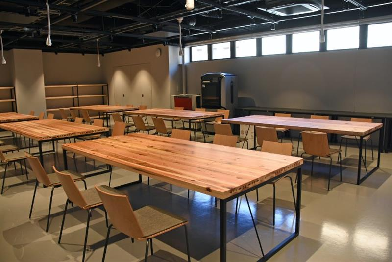

<nav class="navbar">
    <a href="index.html" class="noUnderLine"><span class="logo"><span>京都橘大学</span><br>プログラミングパーク</span></a>
  
    <button class="menu-toggle" id="menu-toggle">☰</button>
    <div class="menu" id="menu">
      <a href="index.html">ホーム</a>
      <a href="equipment.html">機器利用</a>
      <a href="#services">学習支援</a>
      <a href="#about">組織概要</a>
      <a href="#contact">お問い合わせ</a>
    </div>
  </nav>
  
  <div class="hero">
    
  </div>

